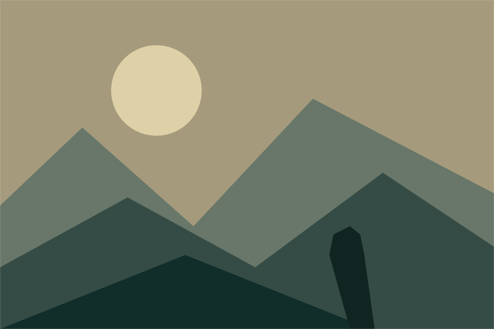

UZAIR AMIN / VIDEO EDITOR & FILMMAKER
MAKE EVERYFRAME FEEL.
Enter the portfolio ↗01 / THE OPENING SHOT
ILLUSTRATED SCENES / PREVIEW01 / THE PORTFOLIO
View all projects ↗Selected work.
Preview collection — illustrated sample projects. Real work will appear here once added.
THE EDIT CHANGES EVERYTHINGSame frame.
Same frame.
Different feeling.
Drag to explore how a colour grade changes the mood of a shot.
An interactive illustration, ready for a still from Uzair’s work.

RAWTHE GRADE